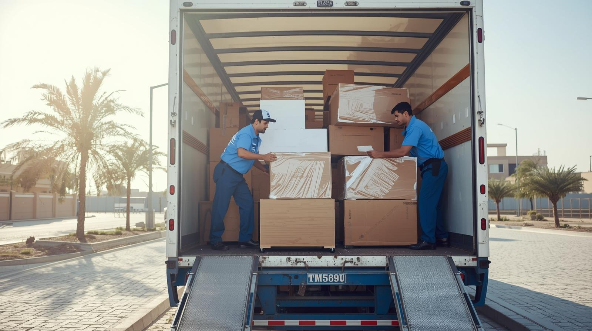

دينا نقل عفش حي ظهرة لبن

إذا كنت من سكان حي ظهرة لبن وتبحث عن طريقة آمنة سريعة وموثوقة لنقل أثاث منزلك أو مكتبك، فإن شركة نقل الرياض توفر لك دينا نقل عفش حي ظهرة لبن هي أفضل خيار لك، حيث تقدم لك هذه الخدمة حلولًا احترافية تشمل فك وتركيب العفش، التغليف الجيد، والنقل باستخدام سيارة دينا مجهزة بالكامل لضمان سلامة الأثاث أثناء التحميل والتنزيل، بفضل خبرة الفريق المتخصص والالتزام بالمواعيد، توفر دينا نقل عفش حي ظهرة لبن راحة البال للعملاء مع أسعار تنافسية وجودة عالية، مما يجعلها الوجهة الأولى لكل من يرغب في الانتقال داخل الحي أو إلى أي منطقة أخرى في الرياض، تواصل الأن مع نقل الرياض واحصل على خدمات نقل عفش في حي ظهرة لبن وجميع أحياء الرياض.
أهمية الاستعانة بخدمة دينا نقل عفش حي ظهرة لبن
الانتقال من منزل أو مكتب إلى آخر جديد يتطلب عناية خاصة، وهنا تأتي أهمية الاستعانة بخدمة دينا نقل عفش حي ظهرة لبن التي توفرها شركة نقل الرياض، هذه الخدمة تضمن لك نقل الأثاث والمقتنيات بأمان وسرعة، مع توفير سيارات ودينات مجهزة خصيصًا لحماية العفش من الخدوش أو التلف أثناء النقل، بالإضافة إلى ذلك، يقوم فريق العمل المحترف بفك وتركيب الأثاث وتغليفه بمواد عالية الجودة، مما يوفر عليك الجهد والوقت، الاعتماد على شركة نقل الرياض يعني حصولك على تجربة نقل سلسة، منظمة، وخالية من المتاعب، مع التزام كامل بالمواعيد وتقديم حلول تناسب جميع احتياجاتك، لا تتردد وتواصل الأن مع شركة نقل الرياض واضمن عملية نقل سلسة ومريحة.
مميزات دينا نقل عفش حي ظهرة لبن عن غيرها من الخدمات
تتميز دينا نقل عفش حي ظهرة لبن بأنها الخيار الأمثل لكل من يبحث عن سرعة الإنجاز ودقة العمل في وقت واحد، فهي مزودة بأحدث وسائل التحميل والتفريغ التي تضمن سلامة الأثاث وحمايته من أي خدوش أو تلف أثناء النقل، كما أن فريق العمل مدرب على التعامل مع جميع أنواع الأثاث، من القطع الكبيرة والثقيلة إلى القطع الحساسة والقابلة للكسر، ومع شركة نقل الرياض، تحصل على خدمة مضمونة تشمل التغليف الآمن، النقل السريع، والتسليم في الموعد المحدد، مما يمنحك راحة البال ويجعل عملية الانتقال تجربة سهلة وخالية من المتاعب.
خطوات تنفيذ عملية دينا نقل عفش حي ظهرة لبن باحترافية
تعتمد دينا نقل عفش حي ظهرة لبن على خطة عمل منظمة لضمان إتمام عملية النقل بأعلى درجات الكفاءة.
- تبدأ الخطوة الأولى بمعاينة الأثاث وتحديد متطلبات النقل، سواء من حيث نوع التغليف أو الأدوات اللازمة.
- يلي ذلك مرحلة التغليف الاحترافي باستخدام مواد عالية الجودة لحماية القطع من الصدمات والخدوش.
- بعد ذلك، يقوم فريق شركة نقل الرياض بتحميل الأثاث إلى الدينا باستخدام أحدث الوسائل التي تمنع أي تلف.
- ثم يتم نقل العفش إلى الموقع الجديد بسرعة وأمان.
- وأخيرًا، تتم عملية التفريغ وترتيب الأثاث في المكان المحدد، مما يوفر عليك الجهد والوقت ويضمن لك تجربة نقل مريحة وموثوقة.
أفضل شركات دينا نقل عفش حي ظهرة لبن بأسعار مناسبة
إذا كنت تبحث عن أفضل شركة دينا نقل عفش حي ظهرة لبن، فإن شركة نقل الرياض هي خيارًا مثاليًا، حيث تقدم الشركة خدمات متكاملة لنقل عفشك تجمع بين الكفاءة والتكلفة المناسبة، كما تضم الشركة فريق محترف ذو خبرة عالية، يقدم خدمات تغليف ونقل وتركيب إحترافية، بالإضافة إلى الشحن الآمن باستخدام سيارات دينا مجهزة لنقل عفش بأمان، كما أن الشركة تمتاز بإلتزامها بالمواعيد والدقة في التعامل، تغطية شاملة لجميع أحياء الرياض بما فيهم حي ظهرة لبن.
تغليف وفك وتركيب الأثاث ضمن خدمة دينا نقل عفش حي ظهرة لبن
عند اختيارك دينا نقل عفش حي ظهرة لبن مع شركة نقل الرياض، فأنت تحصل على خدمة متكاملة تبدأ من تغليف الأثاث باستخدام مواد عالية الجودة لحمايته من الخدوش أو الكسر أثناء النقل، مرورًا بخدمة فك الأثاث الكبيرة مثل الدواليب والمكاتب، وصولًا إلى إعادة التركيب بدقة في موقعك الجديد، فريقنا مدرب على التعامل مع جميع أنواع الأثاث، سواء الكلاسيكي أو الحديث، مع ضمان الالتزام بالمواعيد وحفظ ممتلكاتك في أمان تام، نحن نؤمن أن النقل ليس مجرد شحن، بل هو عملية منظمة تحافظ على سلامة ممتلكاتك من البداية وحتى النهاية، لذلك لا تتردد وتواصل معنا الأن لتحصل على أفضل خدمة بأفضل سعر.
كيف تختار أفضل دينا نقل عفش حي ظهرة لبن بسرعة وأمان؟
اختيار أفضل دينا نقل عفش حي ظهرة لبن يعتمد على عدة معايير أساسية تضمن لك سرعة التنفيذ وأعلى مستويات الأمان، في المقدمة تأتي خبرة الشركة في مجال نقل العفش حيث يجب اختيار شركة تمتلك خبرة واسعة في المجال لضمان الحصول على خدمات عالية الجودة.
ثم توافر فريق عمل مدرب على الفك والتركيب والتغليف باحترافية، كما يجب التأكد من استخدام معدات نقل حديثة وسيارات مجهزة تحمي الأثاث من أي ضرر أثناء التحميل أو التفريغ، ومن المهم أيضًا أن توفر الشركة التأمين على الأثاث والالتزام بالمواعيد المحددة.
شركة نقل الرياض تقدم لك كل هذه المزايا وأكثر، مع خدمات سريعة واحترافية بأسعار تناسب الجميع، مما يجعلها الخيار الأمثل لأي شخص يبحث عن دينا نقل عفش في حي ظهرة لبن بكل راحة وأمان.
مناطق الخدمة التي تغطيها دينا نقل عفش حي ظهرة لبن
تقدم شركة نقل الرياض خدمة دينا نقل عفش حي ظهرة لبن بتغطية شاملة لجميع مناطق الحي وجميعالأحياء المجاورة مثل حي لبن الغربي، حي السويدي، حي طويق، حي بدر، بالإضافة إلى مناطق أخرى داخل عاصمة الرياض.
تمتلك شركة نقل الرياض أسطولًا مجهزًا تعمل على مدار 24 ساعة لتلبية احتياجات العملاء في مختلف الأحياء، وذلك مع ضمان جودة الخدمات والالتزام بالمواعيد.
في النهاية، تعد خدمة دينا نقل عفش حي ظهرة لبن الحل الأمثل لكل من يبحث عن سرعة وأمان في نقل الأثاث داخل وخارج الرياض، وذلك بفضل خبرة السائقين، وفريق العمل المدرب على أعلى مستوى، والمعدات الحديثة، تضمن لك شركة نقل الرياض تجربة نقل خالية من المتاعب، مع الحفاظ على جميع مقتنياتك بأعلى درجات العناية، سواء كنت تنتقل داخل الحي أو إلى أي منطقة أخرى، يمكنك الاعتماد على شركة نقل الرياض لتكون شريكك الموثوق في كل خطوة.

الأسئلة الشائعة حول دينا نقل عفش حي ظهرة لبن
ما هي أسعار دينا نقل عفش ظهره لبن؟
تختلف الأسعار باختلاف الخدمة المقدمة هل هي تشمل نقل فقط أم نقل وتركيب وفك عفش قديم، لذلك يجب عليك أولًا تحديد الخدمات التي تحتاجها لكي يتم التسعير بشكل صحيح.
ما هي خدمات دينا نقل عفش حي ظهرة لبن بالرياض؟
تقدم خدمة دينا نقل عفش حي ظهرة لبن بالرياض حلولًا متكاملة لنقل الأثاث والمقتنيات بسهولة وأمان، حيث تشمل الخدمة تحميل ونقل الأثاث بجميع أنواعه، وفك وتركيب قطع الأثاث الكبيرة، بالإضافة إلى التغليف الاحترافي لحماية الأغراض من الخدوش أو الكسر أثناء النقل، وتوفر شركة نقل الرياض أسطولًا من سيارات الدينا المجهزة بمعدات حديثة لضمان النقل السريع والآمن، إلى جانب فريق عمل مدرب يمتلك الخبرة الكافية للتعامل مع جميع أنواع الأثاث، سواء المنزلي أو المكتبي. كما تشمل الخدمة إمكانية النقل داخل الحي أو إلى أي منطقة أخرى في الرياض، مع الالتزام بالمواعيد وجودة التنفيذ.